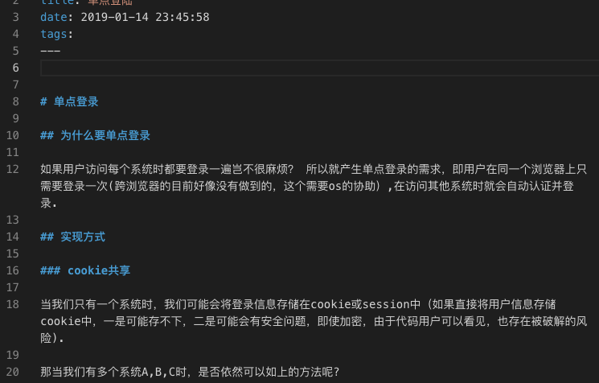

<!DOCTYPE html>


  


<html class="theme-next pisces use-motion" lang="zh-Hans">
<head><meta name="generator" content="Hexo 3.9.0">
  <meta charset="UTF-8">
<meta http-equiv="X-UA-Compatible" content="IE=edge">
<meta name="viewport" content="width=device-width, initial-scale=1, maximum-scale=1">
<meta name="theme-color" content="#222">


<meta http-equiv="Cache-Control" content="no-transform">
<meta http-equiv="Cache-Control" content="no-siteapp">


<link href="/lib/font-awesome/css/font-awesome.min.css?v=4.6.2" rel="stylesheet" type="text/css">

<link href="/css/main.css?v=6.0.0" rel="stylesheet" type="text/css">


  <link rel="apple-touch-icon" sizes="180x180" href="/images/apple-touch-icon-next.png?v=6.0.0">


  <link rel="icon" type="image/png" sizes="32x32" href="/images/favicon-32x32-next.png?v=6.0.0">


  <link rel="icon" type="image/png" sizes="16x16" href="/images/favicon-16x16-next.png?v=6.0.0">


  <link rel="mask-icon" href="/images/logo.svg?v=6.0.0" color="#222">


  <meta name="keywords" content="Hexo, NexT">


<meta name="description" content="使用CSS+XML完成任意文档的渲染css 并非只能作用于html元素，任意的tag都可以定义相应的css规则。 将css规则和xml文档喂给浏览器引擎，就可以渲染出合适的页面。 eg:">
<meta name="keywords" content="码农 蓝星">
<meta property="og:type" content="article">
<meta property="og:title" content="some_thoughts">
<meta property="og:url" content="https://dumbdonkey.github.io/2019/06/27/some-thoughts/index.html">
<meta property="og:site_name" content="蓝星码农生存手册">
<meta property="og:description" content="使用CSS+XML完成任意文档的渲染css 并非只能作用于html元素，任意的tag都可以定义相应的css规则。 将css规则和xml文档喂给浏览器引擎，就可以渲染出合适的页面。 eg:">
<meta property="og:locale" content="zh-Hans">
<meta property="og:image" content="https://dumbdonkey.github.io/2019/06/27/some-thoughts/resource/2019-06-27-16-13-47.png">
<meta property="og:image" content="https://dumbdonkey.github.io/2019/06/27/some-thoughts/resource/2019-06-27-16-14-04.png">
<meta property="og:updated_time" content="2019-09-07T14:58:45.462Z">
<meta name="twitter:card" content="summary">
<meta name="twitter:title" content="some_thoughts">
<meta name="twitter:description" content="使用CSS+XML完成任意文档的渲染css 并非只能作用于html元素，任意的tag都可以定义相应的css规则。 将css规则和xml文档喂给浏览器引擎，就可以渲染出合适的页面。 eg:">
<meta name="twitter:image" content="https://dumbdonkey.github.io/2019/06/27/some-thoughts/resource/2019-06-27-16-13-47.png">


<script type="text/javascript" id="hexo.configurations">
  var NexT = window.NexT || {};
  var CONFIG = {
    root: '/',
    scheme: 'Pisces',
    version: '6.0.0',
    sidebar: {"position":"left","display":"post","offset":12,"b2t":false,"scrollpercent":false,"onmobile":false},
    fancybox: false,
    fastclick: false,
    lazyload: false,
    tabs: true,
    motion: {"enable":true,"async":false,"transition":{"post_block":"fadeIn","post_header":"slideDownIn","post_body":"slideDownIn","coll_header":"slideLeftIn","sidebar":"slideUpIn"}},
    duoshuo: {
      userId: '0',
      author: '博主'
    },
    algolia: {
      applicationID: '',
      apiKey: '',
      indexName: '',
      hits: {"per_page":10},
      labels: {"input_placeholder":"Search for Posts","hits_empty":"We didn't find any results for the search: ${query}","hits_stats":"${hits} results found in ${time} ms"}
    }
  };
</script>


  <link rel="canonical" href="https://dumbdonkey.github.io/2019/06/27/some-thoughts/">


  <title>单点登陆 | 蓝星码农生存手册</title>
  


</head>

<body itemscope itemtype="http://schema.org/WebPage" lang="zh-Hans">

  
  
    
  

  <div class="container sidebar-position-left page-post-detail">
    <div class="headband"></div>

    <header id="header" class="header" itemscope itemtype="http://schema.org/WPHeader">
      <div class="header-inner"> <div class="site-brand-wrapper">
  <div class="site-meta ">
    

    <div class="custom-logo-site-title">
      <a href="/" class="brand" rel="start">
        <span class="logo-line-before"><i></i></span>
        <span class="site-title">蓝星码农生存手册</span>
        <span class="logo-line-after"><i></i></span>
      </a>
    </div>
      
        <p class="site-subtitle"></p>
      
  </div>

  <div class="site-nav-toggle">
    <button>
      <span class="btn-bar"></span>
      <span class="btn-bar"></span>
      <span class="btn-bar"></span>
    </button>
  </div>
</div>

<nav class="site-nav">
  

  
    <ul id="menu" class="menu">
      
        
        <li class="menu-item menu-item-home">
          <a href="/" rel="section">
            
              <i class="menu-item-icon fa fa-fw fa-home"></i> <br>
            
            首页
          </a>
        </li>
      
        
        <li class="menu-item menu-item-archives">
          <a href="/archives/" rel="section">
            
              <i class="menu-item-icon fa fa-fw fa-archive"></i> <br>
            
            归档
          </a>
        </li>
      

      
    </ul>
  

  
</nav>


 </div>
    </header>

    <main id="main" class="main">
      <div class="main-inner">
        <div class="content-wrap">
          <div id="content" class="content">
            

  <div id="posts" class="posts-expand">
    

  

  
  
  

  <article class="post post-type-normal" itemscope itemtype="http://schema.org/Article">
  
  
  
  <div class="post-block">
    <link itemprop="mainEntityOfPage" href="https://dumbdonkey.github.io/2019/01/14/sso/">

    <span hidden itemprop="author" itemscope itemtype="http://schema.org/Person">
      <meta itemprop="name" content="dumbdonkey">
      <meta itemprop="description" content>
      <meta itemprop="image" content="/images/avatar.gif">
    </span>

    <span hidden itemprop="publisher" itemscope itemtype="http://schema.org/Organization">
      <meta itemprop="name" content="蓝星码农生存手册">
    </span>

    
      <header class="post-header">

        
        
          <h1 class="post-title" itemprop="name headline">单点登陆</h1>
        

        <div class="post-meta">
          <span class="post-time">
            
              <span class="post-meta-item-icon">
                <i class="fa fa-calendar-o"></i>
              </span>
              
                <span class="post-meta-item-text">发表于</span>
              
              <time title="创建于" itemprop="dateCreated datePublished" datetime="2019-01-14T23:45:58+08:00">2019-01-14</time>
            

            

            
          </span>

          

          
            
          

          
          

          

          

          

        </div>
      </header>
    

    
    
    
    <div class="post-body" itemprop="articleBody">

      
      

      
        <p></p>
<h1 id="单点登录"><a href="#单点登录" class="headerlink" title="单点登录"></a>单点登录</h1><h2 id="为什么要单点登录"><a href="#为什么要单点登录" class="headerlink" title="为什么要单点登录"></a>为什么要单点登录</h2><p>如果用户访问每个系统时都要登录一遍岂不很麻烦？ 所以就产生单点登录的需求，即用户在同一个浏览器上只需要登录一次(跨浏览器的目前好像没有做到的，这个需要os的协助）,在访问其他系统时就会自动认证并登录.</p>
<h2 id="实现方式"><a href="#实现方式" class="headerlink" title="实现方式"></a>实现方式</h2><h3 id="cookie共享"><a href="#cookie共享" class="headerlink" title="cookie共享"></a>cookie共享</h3><p>当我们只有一个系统时，我们可能会将登录信息存储在cookie或session中（如果直接将用户信息存储cookie中，一是可能存不下，二是可能会有安全问题，即使加密，由于代码用户可以看见，也存在被破解的风险).</p>
<p>那当我们有多个系统A,B,C时，是否依然可以如上的方法呢?</p>
<p>当多个系统拥有共同的顶级域名时，依据cookie的可见性规则，使用上述的方案也可实现单点登录的需求.</p>
<h3 id="中间页跳转"><a href="#中间页跳转" class="headerlink" title="中间页跳转"></a>中间页跳转</h3><p>那么如果A,B,C三个系统不具有共同的顶级域名时该如何处理?</p>
<p>我们可以独立出一个单独的系统D(假设D系统的域名为<a href="http://www.acct.com)专门负责用户登录与认证" target="_blank" rel="noopener">www.acct.com)专门负责用户登录与认证</a>.</p>
<p>那么在用户登录<a href="http://www.acct.com后，在浏览器的cookie中，该域名下就会有我们写入的cookie" target="_blank" rel="noopener">www.acct.com后，在浏览器的cookie中，该域名下就会有我们写入的cookie</a></p>
<p><a href="http://www.acct.com/" target="_blank" rel="noopener">www.acct.com/</a>  维护登录cookie</p>
<p>当系统A访问页面<a href="http://www.a.com/a.html时，可以按照如下操作流程进行" target="_blank" rel="noopener">www.a.com/a.html时，可以按照如下操作流程进行</a></p>
<ol>
<li><p>浏览器向服务端请求 <a href="http://www.a.com/a.html" target="_blank" rel="noopener">www.a.com/a.html</a></p>
</li>
<li><p>服务端判断是否有cookie,没有则返回302重定向到 <a href="http://www.acct.com并携带上原始的连接" target="_blank" rel="noopener">www.acct.com并携带上原始的连接</a>.<br>eg: <a href="http://www.acct.com/sso?target=www.a.com/a.html" target="_blank" rel="noopener">http://www.acct.com/sso?target=www.a.com/a.html</a></p>
</li>
<li><p>浏览器访问 <a href="http://www.acct.com/sso?target=www.a.com/a.html" target="_blank" rel="noopener">http://www.acct.com/sso?target=www.a.com/a.html</a><br> 由于之前已经登录过了,那么acct的服务端会检测到cookie的存在。说明当前浏览器之前已经登录过了. 此时只需要生成一个ticketId并添加到目标连接后面，然后使用302在重定向回<a href="http://www.a.com/a.html即可" target="_blank" rel="noopener">www.a.com/a.html即可</a>.<br> eg:<br> <a href="http://www.a.com/a.html?ticketId=abcdefg" target="_blank" rel="noopener">www.a.com/a.html?ticketId=abcdefg</a></p>
</li>
<li><p>浏览器再次访问 <a href="http://www.a.com/a.html?ticketId=abcdefg" target="_blank" rel="noopener">www.a.com/a.html?ticketId=abcdefg</a><br>后端服务在处理请求过程中，会检测到ticketId的存在，验证正确性后可以通过相应的接口向D系统获取用户信息，然后在自己的cookie中写入已登录标识.</p>
</li>
</ol>
<ul>
<li><p>容易忽略的关键点</p>
<p>  单点登录理解过程中容易陷入一个误区：</p>
<p>  即系统要校验一个用户是否已登录，必须得通过用户信息. 然而很明显单点系统并不是这样的.</p>
<p>  因为事实上验证一个用户是否登录靠的是检查当前浏览器中 登录应用是否已经种植了登录的cookie.如果有就说明登录过，如果没有才需要渲染出登录页.</p>
</li>
</ul>
<h2 id="参考"><a href="#参考" class="headerlink" title="参考"></a>参考</h2><p><a href="https://developer.mozilla.org/en-US/docs/Web/HTTP/Cookies" target="_blank" rel="noopener">https://developer.mozilla.org/en-US/docs/Web/HTTP/Cookies</a></p>

      
    </div>
    
    
    

    

    

    

    <footer class="post-footer">
      

      
      
      

      
        <div class="post-nav">
          <div class="post-nav-next post-nav-item">
            
              <a href="/2018/11/22/方法or事件/" rel="next" title="方法or事件">
                <i class="fa fa-chevron-left"></i> 方法or事件
              </a>
            
          </div>

          <span class="post-nav-divider"></span>

          <div class="post-nav-prev post-nav-item">
            
              <a href="/2019/05/05/pycharm的坑/" rel="prev" title="pycharm_issue">
                pycharm_issue <i class="fa fa-chevron-right"></i>
              </a>
            
          </div>
        </div>
      

      
      
    </footer>
  </div>
  
  
  
  </article>


    <div class="post-spread">
      
    </div>
  </div>


          </div>
          


          

  


        </div>
        
          
  
  <div class="sidebar-toggle">
    <div class="sidebar-toggle-line-wrap">
      <span class="sidebar-toggle-line sidebar-toggle-line-first"></span>
      <span class="sidebar-toggle-line sidebar-toggle-line-middle"></span>
      <span class="sidebar-toggle-line sidebar-toggle-line-last"></span>
    </div>
  </div>

  <aside id="sidebar" class="sidebar">
    
    <div class="sidebar-inner">

      

      
        <ul class="sidebar-nav motion-element">
          <li class="sidebar-nav-toc sidebar-nav-active" data-target="post-toc-wrap">
            文章目录
          </li>
          <li class="sidebar-nav-overview" data-target="site-overview-wrap">
            站点概览
          </li>
        </ul>
      

      <section class="site-overview-wrap sidebar-panel">
        <div class="site-overview">
          <div class="site-author motion-element" itemprop="author" itemscope itemtype="http://schema.org/Person">
            
              <p class="site-author-name" itemprop="name">dumbdonkey</p>
              <p class="site-description motion-element" itemprop="description">站在宇宙的尽头,穿越浩渺时空,俯视人生、对待生命!</p>
          </div>

          <nav class="site-state motion-element">

            
              <div class="site-state-item site-state-posts">
              
                <a href="/archives/">
              
                  <span class="site-state-item-count">10</span>
                  <span class="site-state-item-name">日志</span>
                </a>
              </div>
            

            
              
              
              <div class="site-state-item site-state-categories">
                
                  <span class="site-state-item-count">1</span>
                  <span class="site-state-item-name">分类</span>
                
              </div>
            

            
              
              
              <div class="site-state-item site-state-tags">
                
                  <span class="site-state-item-count">5</span>
                  <span class="site-state-item-name">标签</span>
                
              </div>
            

          </nav>

          

          

          
          

          
          

          

        </div>
      </section>

      
      <!--noindex-->
        <section class="post-toc-wrap motion-element sidebar-panel sidebar-panel-active">
          <div class="post-toc">

            
              
            

            
              <div class="post-toc-content"><ol class="nav"><li class="nav-item nav-level-1"><a class="nav-link" href="#单点登录"><span class="nav-number">1.</span> <span class="nav-text">单点登录</span></a><ol class="nav-child"><li class="nav-item nav-level-2"><a class="nav-link" href="#为什么要单点登录"><span class="nav-number">1.1.</span> <span class="nav-text">为什么要单点登录</span></a></li><li class="nav-item nav-level-2"><a class="nav-link" href="#实现方式"><span class="nav-number">1.2.</span> <span class="nav-text">实现方式</span></a><ol class="nav-child"><li class="nav-item nav-level-3"><a class="nav-link" href="#cookie共享"><span class="nav-number">1.2.1.</span> <span class="nav-text">cookie共享</span></a></li><li class="nav-item nav-level-3"><a class="nav-link" href="#中间页跳转"><span class="nav-number">1.2.2.</span> <span class="nav-text">中间页跳转</span></a></li></ol></li><li class="nav-item nav-level-2"><a class="nav-link" href="#参考"><span class="nav-number">1.3.</span> <span class="nav-text">参考</span></a></li></ol></li></ol></div>
            

          </div>
        </section>
      <!--/noindex-->
      

      

    </div>
  </aside>


        
      </div>
    </main>

    <footer id="footer" class="footer">
      <div class="footer-inner">
        <div class="copyright">&copy; <span itemprop="copyrightYear">2019</span>
  <span class="with-love">
    <i class="fa fa-user"></i>
  </span>
  <span class="author" itemprop="copyrightHolder">dumbdonkey</span>

  

  
</div>


  <div class="powered-by">由 <a class="theme-link" target="_blank" href="https://hexo.io">Hexo</a> 强力驱动</div>


  <span class="post-meta-divider">|</span>


  <div class="theme-info">主题 &mdash; <a class="theme-link" target="_blank" href="https://github.com/theme-next/hexo-theme-next">NexT.Pisces</a> v6.0.0</div>


        


        
      </div>
    </footer>

    
      <div class="back-to-top">
        <i class="fa fa-arrow-up"></i>
        
      </div>
    

    

  </div>

  

<script type="text/javascript">
  if (Object.prototype.toString.call(window.Promise) !== '[object Function]') {
    window.Promise = null;
  }
</script>


  
  
    <script type="text/javascript" src="/lib/jquery/index.js?v=2.1.3"></script>
  

  
  
    <script type="text/javascript" src="/lib/velocity/velocity.min.js?v=1.2.1"></script>
  

  
  
    <script type="text/javascript" src="/lib/velocity/velocity.ui.min.js?v=1.2.1"></script>
  


  


  <script type="text/javascript" src="/js/src/utils.js?v=6.0.0"></script>

  <script type="text/javascript" src="/js/src/motion.js?v=6.0.0"></script>


  
  


  <script type="text/javascript" src="/js/src/affix.js?v=6.0.0"></script>

  <script type="text/javascript" src="/js/src/schemes/pisces.js?v=6.0.0"></script>


  
  <script type="text/javascript" src="/js/src/scrollspy.js?v=6.0.0"></script>
<script type="text/javascript" src="/js/src/post-details.js?v=6.0.0"></script>


  


  <script type="text/javascript" src="/js/src/bootstrap.js?v=6.0.0"></script>


  


  


	


  


  


  


  

  

  

  
  

  

  

  

</body>
</html>
